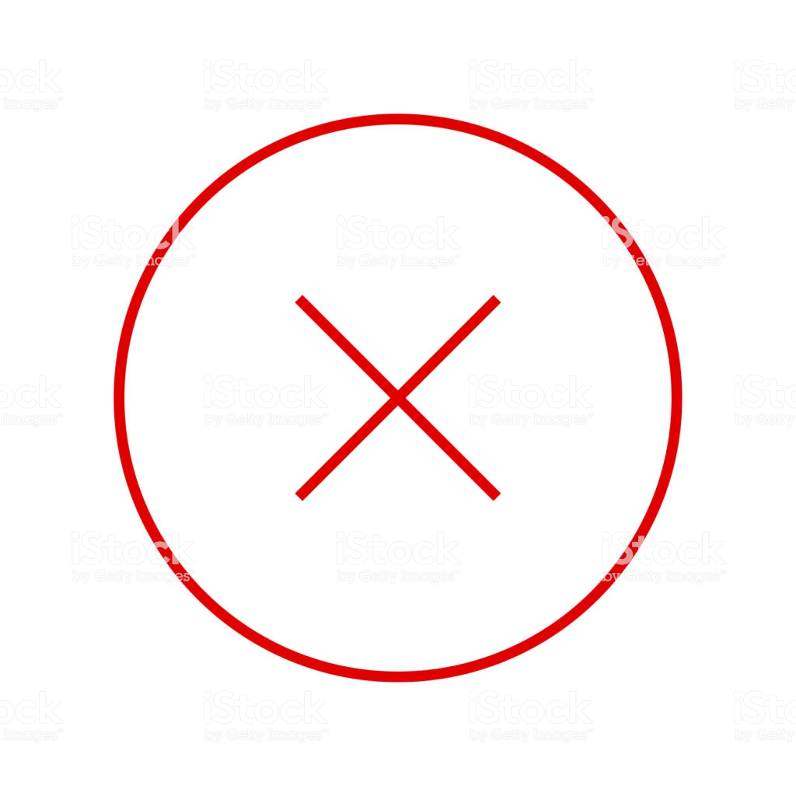

Portada
Portal de la comunidad
Actualidad
Cambios recientes
Páginas nuevas
Página aleatoria
Ayuda
Donaciones
Notificar un error
Herramientas
Lo que enlaza aquí
Contribuciones del usuario
Registros
Subir archivo
Páginas especiales
Información de la página
Idiomas
No has accedido
Discusión
Contribuciones
Crear una cuenta
Acceder
Página de usuario
Discusión
Crear
Sección nueva
Usuario discusión:148.101.233.215
Wikipedia todavía no tiene una página llamada «Usuario discusión:148.101.233.215».
Busca las páginas de Wikipedia que tienen enlaces a «148.101.233.215»
.
Si ya habías creado la página con este nombre,
limpia la caché
de tu navegador.
 También puede que la página que buscas haya sido
borrada
.
Si la página de discusión incluso así no existe:
Crea la discusión sobre «148.101.233.215»
.
Política de privacidad
Acerca de Wikipedia
Limitacion de responsabilidad
Desarrolladores
Estadísticas
Declaracion de cookies
Versión para móviles

 No has accedido
No has accedido